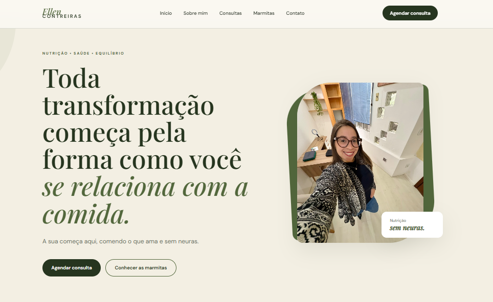
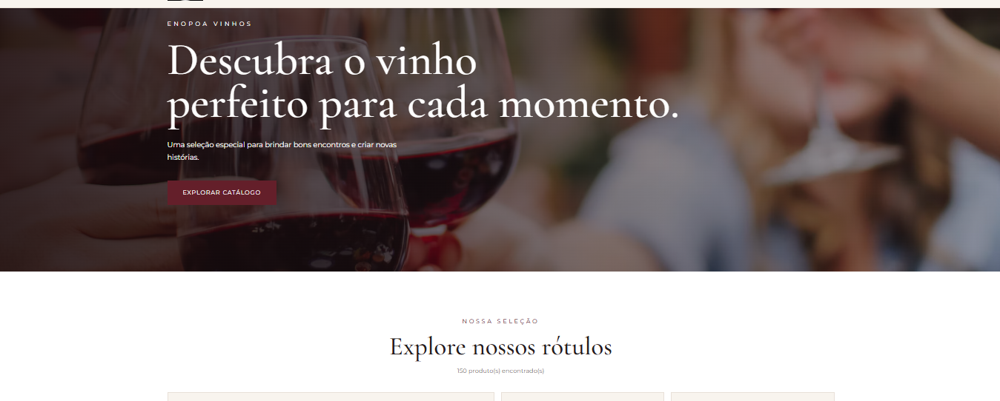

Sites profissionais
Sites modernos, responsivos e estratégicos para apresentar sua empresa, fortalecer sua marca e conquistar novos clientes.
Desenvolvemos sites, experiências digitais e soluções tecnológicas para empresas que buscam evoluir, inovar e fortalecer sua presença no digital.
A FRYKO nasceu com o propósito de aproximar empresas da tecnologia, transformando ideias e desafios em soluções digitais modernas, funcionais e estratégicas.
Acreditamos que cada negócio possui necessidades únicas. Por isso, unimos criatividade, planejamento e desenvolvimento para criar experiências digitais que fazem sentido e geram valor.
Unimos estratégia, design e tecnologia para desenvolver soluções digitais alinhadas aos objetivos de cada negócio.
Sites modernos, responsivos e estratégicos para apresentar sua empresa, fortalecer sua marca e conquistar novos clientes.
Plataformas de vendas digitais que aproximam marcas e consumidores por meio de experiências de compra simples e intuitivas.
Soluções personalizadas para organizar informações, otimizar processos e tornar a gestão do seu negócio mais eficiente.
Automação e soluções inteligentes que simplificam tarefas, aumentam a eficiência e abrem novas possibilidades para empresas.
Conheça alguns projetos desenvolvidos pela FRYKO, unindo tecnologia, estratégia e experiências digitais.

Site institucional · Catálogo digital

Catálogo digital · Comércio eletrônico
Conhecemos seu negócio, seus objetivos e suas necessidades.
Definimos a estratégia e a melhor solução para o projeto.
Transformamos o planejamento em uma experiência digital.
Publicamos o projeto e acompanhamos sua evolução.
Tem um projeto em mente? Vamos conversar e descobrir como podemos transformar sua ideia em realidade.
Iniciar conversa